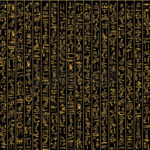

Sekhmet Month, Day 7, Year 6 of Pharaoh Tutankhmunseti IV | Price: 2 copper deben
By the divine decree of Pharaoh Tutankhmunseti IV — custodian of Ma’at, dispenser of justice, blessed by Ra’s radiance, favored by Amun’s strength, lord of Egypt, whose throne unites the Two Lands in harmony:
Failure to comply will result in trial before the Divine Council of Seven.
In a stunning development at the Court of Rameses the Persistent, Chief Architect Amenhotep the Triangular has been dismissed following allegations that his pyramid angles were "mathematically questionable". Sources claim the Pharaoh complained the structure "lacked curb appeal" compared to neighboring Nubian ziggurats.
The scandal deepens as newly discovered papyrus scrolls reveal the architect had been consulting with a time-traveling mathematician from the distant future. "He kept babbling about something called 'Pythagoras' and 'interdimensional geometry'," stated one slave worker who asked to remain anonymous.
"I served the royal family for twenty-seven years," Amenhotep lamented while packing his measuring reeds. "But apparently my 52-degree angle was 'too derivative' of Khufu's work, and the Pharaoh wanted something more 'avant-garde' for his eternal resting place."
Court insiders report that Tutankhmunseti IV became enraged after discovering that the eastern face of his pyramid would only catch the sunrise during summer months. "What am I supposed to do in the afterlife during winter?" the Pharaoh reportedly shouted. "Freeze in the dark like a common crocodile hunter?"
The new royal architect, Nebamun the Oblique, has proposed a controversial octagonal design that he claims will "revolutionize death architecture for generations to come." Critics argue that the souls of the dead might get confused trying to ascend a non-traditional structure.
Meanwhile, Amenhotep has found new employment designing luxury cat tombs for the High Priestess of Bastet.
Archaeologists made a startling discovery yesterday when they unearthed a seven-sided crystal tablet beneath the Great Sphinx's left paw. The artifact bears strange markings resembling both ancient hieroglyphs and symbols never before recorded in Egyptian history.
"This could rewrite everything we know about ancient civilization," said Dr. Zoser Jones of the Cairo Institute. "The tablet appears to contain mathematical formulas that shouldn't exist for another three thousand years."
The discovery team, led by Ankhesenamun the Meticulous, has been working at the site for seven years. "At first we thought it was just another trinket left by treasure hunters," she explained, "but when moonlight hit the surface, hidden glyphs began to glow with an unearthly blue light."
However, controversy erupted when the High Priest of Ra declared the tablet "clearly fake news" and demanded its immediate surrender to temple authorities.
"Any object found in sacred ground belongs to the gods, not to nosy scholars," the High Priest announced during yesterday's sunrise ceremony. "Besides, everyone knows the Sphinx guards secrets meant only for those with divine permission."
When asked about the tablet's strange symbols, Dr. Jones became visibly excited. "There appears to be a recurring pattern of seven stars arranged in the constellation we now call the Great Bear. The ancients believed this formation contained the map to the afterlife, but this tablet suggests something far more significant – possibly a mathematical key to understanding time itself."
The royal court has ordered the tablet moved to the Temple of Thoth for further study, where it will be examined by the kingdom's most trusted astronomers and mathematicians.
Today: Hot and dry, as it has been for the last 3,000 years
Tomorrow: Continued hot, possible locust shower near Delta region
Flooding Season: Still 77 days away according to royal astronomers
Sun God Ra's Mood: Particularly scorching and vindictive
The biannual merchant caravan from Nubia arrived three days ahead of schedule, causing market disruption as traders scrambled to adjust prices. Foreign goods have flooded the royal bazaar, leading to heated debates among the merchant guild.
Current commodity prices:
The Royal Treasurer has announced new import taxes on luxury goods from Mesopotamia, citing the need to fund the Pharaoh's increasingly elaborate tomb complex. Merchants dealing in exotic spices and precious stones protested outside the palace gates but were quickly dispersed by royal guards.
"These taxes will strangle trade like a cobra," complained Senbi the Fat, head of the Merchant Guild. "How are we supposed to sell Persian rugs to nobles if they cost more than a farmer's yearly grain harvest?"
Meanwhile, the copper mines to the east report record production under the new overseer, Ptahhotep the Merciless, who has introduced the revolutionary concept of "scheduled water breaks" for slaves.
Sources close to the palace report that Princess Nefertiti has been secretly meeting with a Libyan prince, causing much consternation among royal advisors who had hoped to secure an alliance with Hittite nobility through marriage.
"The Princess was spotted seven times riding her royal barge suspiciously close to the western border," whispered a palace handmaiden who requested anonymity. "And her new headdress clearly shows Libyan influence."
The royal astrologer has apparently warned against the union, claiming the stars predict "diplomatic disaster" should the courtship continue. However, the Princess reportedly dismissed these concerns, saying, "The stars have been saying the same tired things for centuries."
In related news, the Pharaoh's youngest son has caused another scandal by refusing to participate in the traditional crocodile wrestling ceremony, claiming it's "outdated and unnecessarily dangerous." Royal physicians are reportedly treating the boy for an acute case of common sense, a rare but troubling condition among the nobility.
General Horemheb the Unstoppable has returned victorious from the southern campaign, bringing with him over three hundred prisoners of war and substantial tribute from conquered territories. The victory parade is scheduled for seven days hence, and all citizens are required to attend and look appropriately impressed.
The General's innovative use of chariots equipped with newly designed composite bows overwhelmed enemy forces, who still insist on the outdated practice of fighting on foot with spears.
"It's like they haven't even considered the tactical advantage of mobility," General Horemheb told our correspondent while supervising the arrangement of enemy skulls into a decorative pyramid. "Perhaps in three thousand years they'll catch up to our military technology."
The royal armory reports the successful testing of a new arrow design featuring improved aerodynamics and ritual enchantments applied by the Temple of Sekhmet. The arrows allegedly "seek the hearts of Egypt's enemies with unerring accuracy," although skeptics note this may just be clever marketing by the arrow-makers guild.
In preparation for possible Hittite aggression to the north, the Pharaoh has ordered the construction of seven new border fortresses, each dedicated to a different protective deity. Construction crews are working day and night under the watchful eye of royal overseers, who have been instructed to use "motivational whipping" sparingly and only during daylight hours.
Regions marked in red now pay tribute to the Living God-King
This week our lifestyle expert Ankhesenamun the Picky shares tips for maintaining your mud-brick mansion during locust season:
For those experiencing persistent plague problems, Ankhesenamun recommends consulting a priest of Sekhmet rather than wasting money on "miracle cures" sold by traveling Phoenician merchants.
"Many so-called plague solutions actually attract more pests," she warns. "That 'sacred' beetle powder from Nubia? Just crushed dung with glitter mixed in. Your cat could make something more effective."
This season's trending home decoration includes linen wall hangings in turquoise and gold, strategically placed protection amulets, and at least one decorative mummified ancestor in the formal receiving area.
Latest breakthroughs revolutionizing Egyptian life:
The Royal Innovation Council has awarded this year's Golden Scarab to Nefermaat the Clever for her invention of the folding chair, which she claims came to her in a dream sent by Thoth, god of wisdom.
"I was tired of servants having to carry multiple chairs whenever the royal court moved locations," Nefermaat explained during the elaborate seven-hour award ceremony. "With my design, one servant can carry three chairs, leaving the others free to carry more important items, like my collection of ceremonial wigs."
Not everyone is embracing new technologies, however. The Scribes Guild has formally protested the introduction of wider reed pens, claiming they make handwriting "sloppy and inelegant" and could lead to "the eventual degradation of all written knowledge."
Startling news from the Temple of Thoth: witnesses report the sudden appearance of a strange man claiming to hail from a distant future era!
The populace is divided: some hail him as a prophet sent by Thoth himself, while others whisper he is a harbinger of doom. Meanwhile, Doctor Cyren has requested a laboratory, several scribes, and, inexplicably, a steady supply of pomegranates and honey cakes.
Further updates will follow as scribes document this astonishing development. Some bold voices even speculate that with his aid, Egypt may achieve dominance over all the known world — and worlds beyond.
The High Priest of Amun has announced a major renovation of the Great Temple, funded by mysterious "divine contributions" that skeptics suggest bear a striking resemblance to taxes.
"The god requires more gold inlay on his sacred barque," declared High Priest Amenemhat the Profound during yesterday's procession. "Also, the deity has expressed divine displeasure with the quality of incense being burned and demands the premium imported variety."
In a surprising theological development, the cult of Bastet has seen a surge in popularity among the nobility, with cat mummification services now booked solid for the next three months. The waiting list for premium feline afterlife packages has caused some wealthy families to hide their aging cats from jealous neighbors.
"My precious Mittenpaha deserves nothing but the best golden eye inlays and fish-shaped amulets for her journey to the Field of Reeds," said Lady Tiy, while cradling her twenty-seventh ceremonial cat. "I've reserved the mummification service that uses authentic Syrian cedar oil and wrappings imported from the finest Nubian linen makers."
Meanwhile, followers of Thoth have petitioned the royal court for additional festival days, arguing that seven holy days per year is insufficient to properly honor the god of wisdom and writing. The Royal Calendar Keeper has yet to respond, reportedly being "too busy calculating optimal planting times based on star positions" to address religious concerns.
The Royal Scribe Academy announces this year's graduating class achieved record proficiency in hieratic shorthand, with top student Imhotep the Younger capable of transcribing seven spoken sentences per minute.
"We've revolutionized our teaching methods," boasted Headmaster Ptahmose the Stern. "Students now begin reed pen exercises at age four instead of five, giving them that crucial extra year of finger callous development."
The curriculum has been expanded to include the revolutionary "New Mathematics," featuring advanced techniques for calculating pyramid volumes and predicting Nile flood levels. Critics argue that such knowledge should remain exclusive to temple priests, warning that "too much education for common children could lead to dangerous questioning of divine order."
"A boy's ears are on his back; he listens when he is beaten." - Traditional teaching proverb cited by Academy instructors
In related news, the Pharaoh has decreed that daughters of minor nobility may now receive basic literacy training, provided they use it exclusively for managing household inventories and writing appropriately flattering poems about their future husbands.
The Royal Physician Amenemhat has published a groundbreaking medical papyrus detailing new treatments for common ailments, including a surprisingly effective remedy for digestive troubles that combines honey, beer, and precisely seven crushed herbs.
"The key breakthrough was recognizing that dosages should vary by patient weight," explained the physician while demonstrating his new bronze surgical tools. "Also, we've discovered that bleeding patients is actually counterproductive in most cases, contrary to traditional practices."
The Temple of Sekhmet reports success with their new eye infection treatment, which thankfully contains significantly less pulverized mouse than previous formulations. Patients have responded positively, with one grateful nobleman donating a solid gold cat statue to the temple in thanks for restoring his vision.
However, controversy surrounds the new "miracle cure" being promoted by priests of Isis, who claim their sacred water can heal everything from baldness to crocodile bites. Royal medical authorities have issued a warning after several citizens developed suspicious blue rashes after treatment.
"Any healing solution that requires one's life savings as an 'offering' should be approached with caution," advised the Royal Physician in a public proclamation. "The gods favor proper medical techniques performed by trained physicians, not expensive miracle waters."
The highly anticipated performance by the Theban Orchestra drew record crowds last evening, with their rendition of "Hymn to the Nile" featuring seven new instruments including the innovative water harp.
Critics praised composer Mereruka the Melodious for his bold harmonies, though traditionalists complained that modern music "lacks the disciplined simplicity of classic compositions from the Old Kingdom era."
The Royal Theater continues its successful run of "Osiris Resurrected," a dramatic retelling of the ancient myth featuring elaborate masks and mechanized stage effects. The production has been particularly noted for its realistic dismemberment scene and the tear-jerking reunion of Isis and Osiris.
"I've seen this play seven times already," gushed Lady Nefertari, wiping away tears with an embroidered linen handkerchief. "The actor playing Set is so convincingly evil that children in the audience tried to throw fruit at him during the murder scene."
For those seeking lighter entertainment, traveling performers from Crete will present their famous bull-leaping exhibition next week at the Field of Reeds Arena. Tickets are available in exchange for grain or craft goods of appropriate value.
WANTED: Experienced tomb painter with own brushes. Must be comfortable with confined spaces and able to work for extended periods by oil lamp light. Previous experience depicting journey to afterlife preferred. Contact the Royal Necropolis Office.
FOR SALE: Slightly used set of canopic jars. Original owner no longer needs them (returned from near-death experience). Perfect condition, never stored actual organs. Reasonable offers considered.
MISSING: Prize ibis bird, answers to "Thothy." Sacred to household, white feathers with distinctive black neck. Reward of 7 copper pieces for safe return.
SERVICES: Professional pyramid alignment by former royal astronomer. Ensure your eternal resting place properly aligns with celestial bodies for optimal afterlife journey. Satisfaction guaranteed or your mummy refunded.
ANNOUNCEMENT: The annual "Run From Ammit" charity race will take place next week. Proceeds benefit families of workers crushed during recent pyramid construction. Sign up at any temple of Anubis.
Royal astronomers report unusual stellar activity in the northern sky, with the appearance of a "wandering star" that seems to move contrary to established celestial patterns.
"We've been observing this anomaly for seven consecutive nights," said Chief Astronomer Senenmut the Stargazer. "According to ancient texts, such phenomena often precede significant events in the kingdom."
The priests of Thoth have interpreted the stellar movement as a favorable omen for the Pharaoh's military campaigns, though the cult of Isis offers a contradictory reading involving imminent agricultural prosperity.
Meanwhile, calculations for the upcoming solar temple alignment continue apace, with architects working day and night to ensure that the first rays of the solstice sun will illuminate the sacred inner chamber exactly as designed.
"If we're off by even a fraction of a degree, the light won't hit the statue of Ra properly," explained project supervisor Khnumhotep the Precise. "And no one wants to explain to the Living God-King why his expensive temple doesn't work as promised."
Correspondent: Thothmes R. Cuneiform